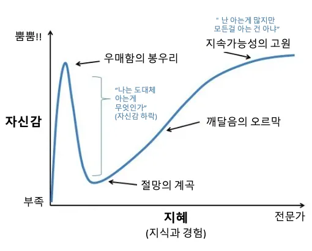

서울특별시교육청 교사 개발자 해커톤 도전형
우매함의 봉우리
덕수고 김용훈 · 명지중 이승열 · 증산중 서호성
SPACE로 발표 시작
👆2026 · VIBE CODING
2026년은 바야흐로
대 딸깍의 시대!
아이디어를 말하고 몇 번만 누르면, 교사도 직접 앱을 만들 수 있습니다.
그런데 만드는 속도만큼
안전도 확인하고 있을까요?🫣
😎작동한 순간, 자신감은 가장 빨리 올라갑니다
우리는 ‘우매함의 봉우리’
어디쯤에 있을까요?
앱이 잘 켜진다는 사실은, 그 앱이 안전하다는 뜻이 아닙니다.
01코드에 남은 API 키
02외부에 열린 데이터베이스
03학생 정보의 불필요한 전송

🧐학습지원 소프트웨어 학교운영위원회 심의는 이미 제도 안에 있습니다
그런데… 정말 ‘심의’할 근거가
충분할까요?
로그인된다 · 저장된다 · 결과가 나온다
개인정보 · 권한 · 외부 전송 · 비밀키
🔎심의를 대신하는 판정이 아니라, 심의할 때 볼 근거가 필요합니다.
🛡️그래서 만들었습니다
학교에서 바로 써 볼 수 있는
보안점검 앱, EduSafety
만드는 중부터 배포한 뒤까지, 서로 다른 세 지점에서 위험 신호를 확인합니다.
만드는 중
자가점검
공개 레포 주소 또는
내 폴더로 검사
배포 후
외부 노출 검사
범용 보안 경고를
한국 학교가 판단할 질문과 근거로 바꿉니다.
🪄교사용 자가점검 스킬
SKILL.md를 넣고,
한 번 더 딸깍
평소 쓰던 AI 코딩 도구가 정해 둔 순서로 프로젝트를 살펴봅니다.
- 1
코드를 읽고검사 범위와 파일을 확인
- 2
위험을 찾고근거와 판단 이유를 정리
- 3
고칠 일을 남깁니다사람이 읽는 HTML 보고서
🎬 직접 시연 · 1분 11초
🐙공개 저장소와 로컬 폴더, 두 가지 입력 경로
GitHub 공개 레포 주소
또는 내 컴퓨터의 폴더로
로컬 검사
공개 저장소는 URL을 사이트에 입력하고, 공개하지 않은 프로젝트는 내 컴퓨터 폴더를 선택합니다.
URL 입력 · 폴더 선택→정적 규칙→근거·보완
공개 저장소는 커밋 SHA, 폴더는 콘텐츠 지문에 검사를 고정합니다.🔎배포까지 끝났다면
마지막은
URL 검사
https://sendev.kr/
01TLS와 HTTP 상태
02보안 응답 헤더
03첫 HTML의 공개 신호
🛑침투 테스트가 아닙니다. 소유했거나 허가받은 HTTPS 주소만 저영향 방식으로 확인합니다.
🤖“Claude에 그냥 물어봐도 되는 것 아닌가요?”
맞습니다. 차이는 AI가 아니라
AI에게 건네는 학교의 기준입니다.
- 폭넓은 보안 조언
- 질문마다 달라지는 범위
- 학교 맥락은 사용자가 설명
- 고정 규칙으로 위험 신호 수집
- 개인정보·학생 안전·수업 맥락
- 근거와 보완 사항을 학교 언어로
- 교육부 「학습지원 소프트웨어 선정 기준 및 가이드라인」 + 그 외 공공기관 공식 문서 29건을 검사항목 설계에 반영
검사를 하는 순간, 교사도 한국 학교가 알아야 할 법과 기준을 함께 만나게 됩니다.
🚧솔직한 현재 위치
비록 블록체인 인증마크는
달지 못했지만,
‘딸깍’으로 만든 앱을 배포하기 전에
한 번 멈춰서 확인하는 흐름은 만들었습니다.